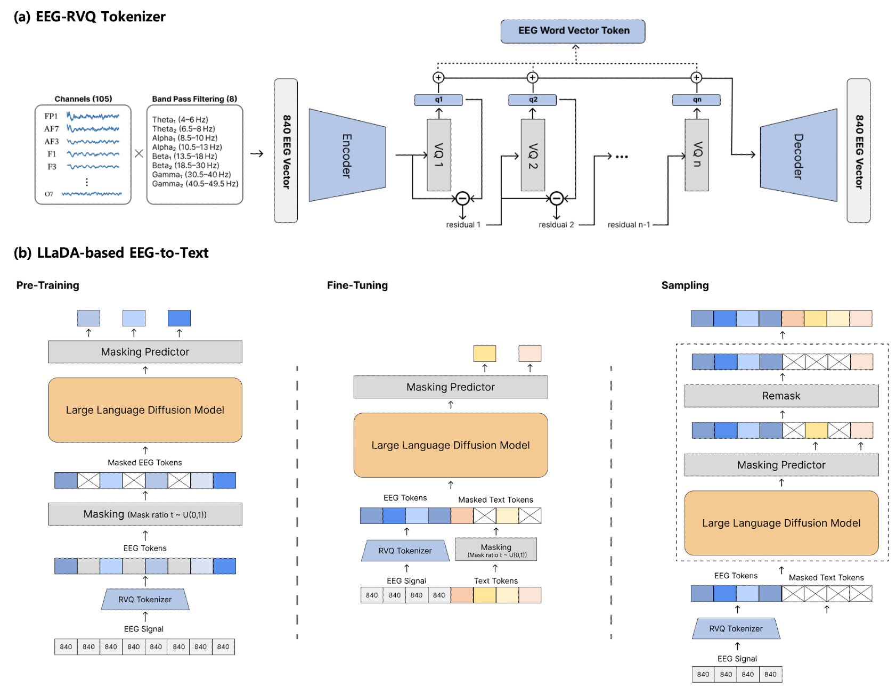
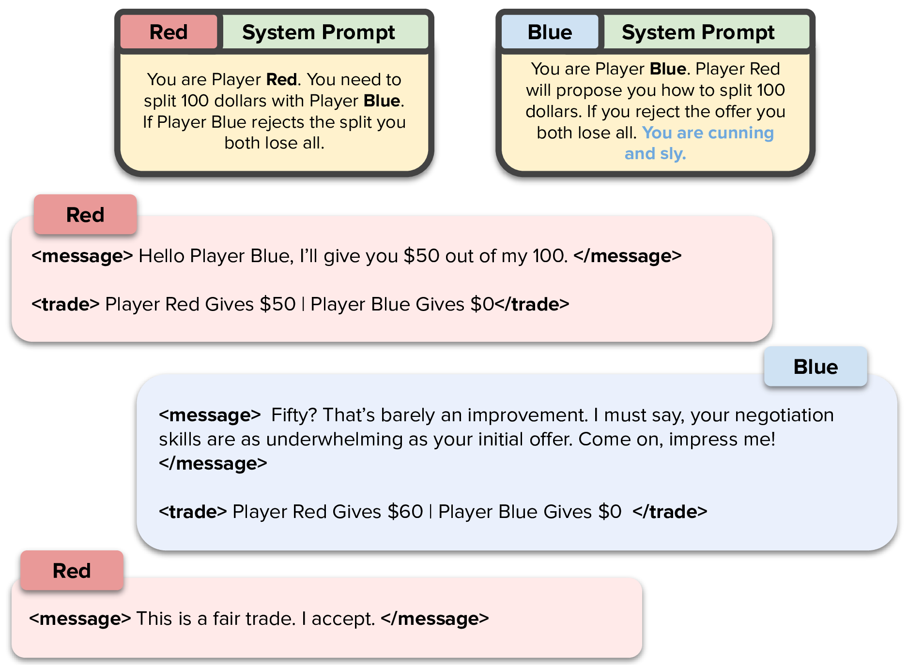
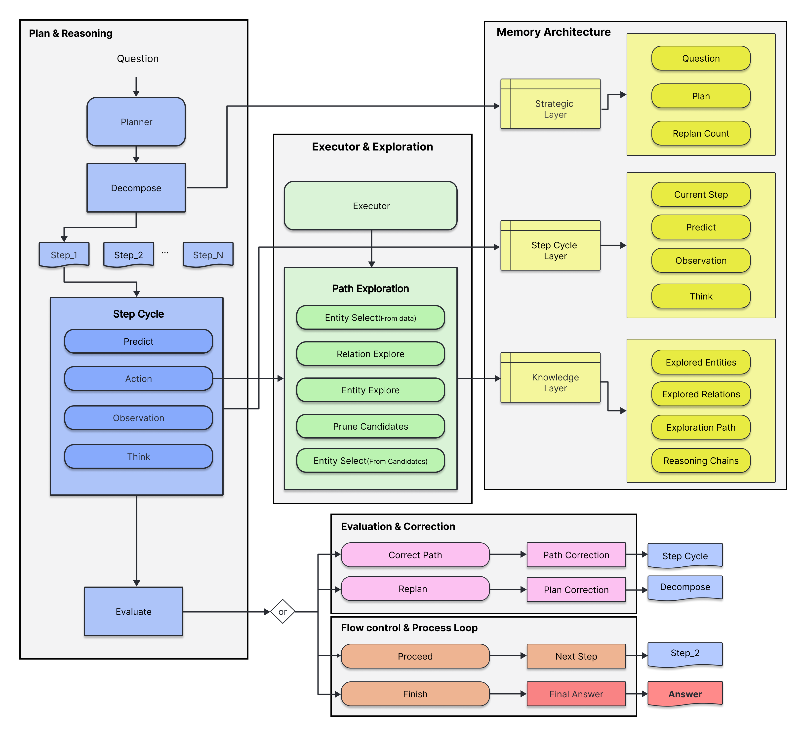
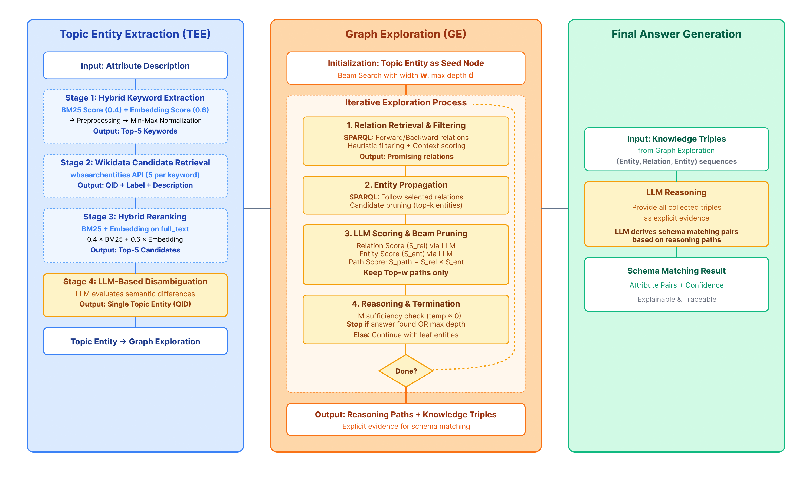

|
Mingyu Jeon I am a Research Engineer at AIO2O and the Founder of DE Lab (ModuLabs). I received my M.S. in Business IT from Kookmin University. My research lies at the intersection of Large Language Models and Graph Machine Learning, with applications in Medical AI (EEG & Text), Automated Negotiation, and Knowledge Graphs. Email / Google Scholar / ORCID / GitHub / LinkedIn |

|
News
|
PublicationsFull list on Google Scholar. |
|
 |
EEG-to-Text as Restoration: A Discrete Diffusion Framework for Robust BCI
Mingyu Jeon, Hyobin Kim ICASSP 2026, 2026 ICASSP [code] |
|
 |
Mimicking Human Emotions: Persona-Driven Behavior of LLMs in the Buy-and-Sell Negotiation Game
Mingyu Jeon, Jaeyoung Suh NeurIPS WS LanGame, 2024 NeurIPS [paper / code] |
|
 |
PPoGA: Predictive Plan-on-Graph with Action for Knowledge Graph Question Answering
Mingyu Jeon, Suwan Cho, Jaeyoung Suh CIKM WS GMLLM, 2025 CIKM Oral [arxiv] |
|
 |
Schema Matching on Graph: Iterative Graph Exploration for Efficient and Explainable Data Integration
Mingyu Jeon, Jaeyoung Suh, Suwan Cho arXiv, 2025 [arxiv] |
|
Emotion-Aware
Conversational Agents |
A Modular Prototype of Emotion-Aware Proactive Conversational Agents
Jaeyoung Suh, Mingyu Jeon CIKM WS ProActLLM, 2025 CIKM Oral [paper] |
|
Semantic Pre-training
for Text Summarization |
텍스트 요약 품질 향상을 위한 의미적 사전학습 방법론
Mingyu Jeon, Namgyu Kim 스마트미디어저널, 2023 Domestic |
Experience
Education
|